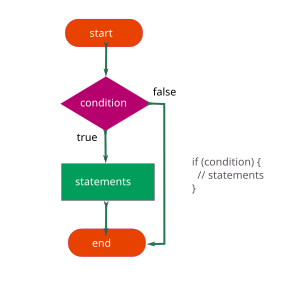
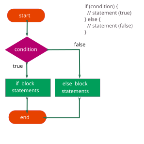
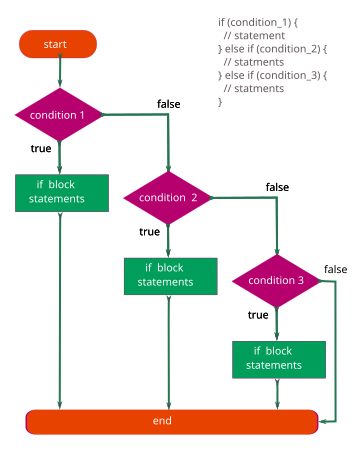
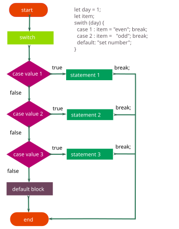

1. Оператори розгалуження
Логічні оператори не можуть самостійно управляти потоком виконання програми, для
цього використовуються розгалуження. Всі вони влаштовані за одним принципом -
вхідні дані приводяться до булю (true або false) і, в залежності від
результату цього значення, потік програми направляється в ту чи іншу гілку.
2. Інструкція if

Вхідні дані, які приводяться до булевого типу називаються умовою. Умову поміщають за оператором if у круглих дужках. Якщо умова приводиться до true, то виконується код в фігурних дужках (гілка).
let cost = 0;
const subscription = 'pro';
if (subscription === 'pro') {
cost = 100;
}
console.log(cost); // 100
Якщо умова приводиться до false, код у фігурних дужках буде пропущений.
let cost = 0;
const subscription = 'free';
if (subscription === 'pro') {
cost = 100;
}
console.log(cost); // 0
2.1. Інструкція if...else

Розширює синтаксис оператора if тим, що в разі якщо умова приводиться до
false, виконається код у фігурних дужках після оператора else.
let cost;
const subscription = 'free';
if (subscription === 'pro') {
cost = 100;
} else {
cost = 0;
}
console.log(cost); // 0
При true, оператор else і пов'язаний з ним програмний блок, ігноруються.
let cost;
const subscription = 'pro';
if (subscription === 'pro') {
cost = 100;
} else {
cost = 0;
}
console.log(cost); // 100
2.2. Інструкція else...if

Розширює синтаксис оператора if...else тим, що після else знову додається
оператор if. На перший погляд код з безлічі подібних вкладень здається
складним. Насправді все відгалуження це результат false на всі попередні
питання.
При першому ж true перевірки припиняються і виконується тільки один сценарій, відповідний цьому true. Тому подібний запис слід читати як: шукаю перший збіг
умови, ігнорую все інше.
let cost;
const subscription = 'premium';
if (subscription === 'free') {
cost = 0;
} else if (subscription === 'pro') {
cost = 100;
} else if (subscription === 'premium') {
cost = 500;
} else {
console.log('Invalid subscription type');
}
console.log(cost); // 500
3. Тернарний оператор
Є конструкція, схожа на if...else, і спрощеним синтаксисом, що називається тернарним оператором (ternary - потрійний).
{умова} ? {вираз якщо умова правдива} : {вираз якщо умова не правдива}
Така конструкція працює наступним чином:
- Обчислюється умова
- Якщо умова
істинна (true), обчислюється вираз після?, в іншому випадку значення після: - Результат обчисленого виразу повертається
let type;
const age = 20;
if (age >= 18) {
type = 'adult';
} else {
type = 'child';
}
Перепишемо приклад використовуючи тернарний оператор.
const age = 20;
const type = age >= 18 ? 'adult' : 'child';
Запишемо операцію пошуку більшого числа.
const num1 = 5;
const num2 = 10;
let biggerNumber;
if (num1 > num2) {
biggerNumber = num1;
} else {
biggerNumber = num2;
}
console.log(biggerNumber); // 10
Код працює вірно, отримуємо більше число з двох, але це рішення здається занадто громіздким, враховуючи, наскільки проста проблема. Що робити? Використовуємо тернарний оператор.
const num1 = 5;
const num2 = 10;
const biggerNumber = num1 > num2 ? num1 : num2;
console.log(biggerNumber); // 10
Тернарний оператор повинен використовуватися в простих операціях привласнення або повернення. Його використання для опису складних розгалужень - погана практика (антипатерн).
4. Інструкція switch
У деяких випадках складності читання логічних конструкцій можна уникнути,
використовуючи оператор розгалуження switch. Синтаксис цього оператора
розбиває умова на загальну частину switch і безліч окремих випадків case.
Тобто застосовність цього оператора обмежена тільки завданнями з одним загальним
питанням і безліччю варіантів відповідей.

Значення виразу - рядок або число, яке порівнюється з усіма значеннями case.
Якщо збігу не відбулося, управління передається default. Оператор break в
завершенні кожного блоку case ставлять, щоб перервати подальші перевірки та
одразу перейти до коду за інструкцією switch.
let cost;
const subscription = 'premium';
switch (subscription) {
case 'free':
cost = 0;
break;
case 'pro':
cost = 100;
break;
case 'premium':
cost = 500;
break;
default:
console.log('Invalid subscription type');
}
console.log(cost); // 500
Якщо оператор break буде відсутній, то після того як виконається якась умова
case, всі наступні за ним блоки коду будуть виконуватися один за іншим, що
може призвести до небажаних наслідків при неправильному застосуванні.